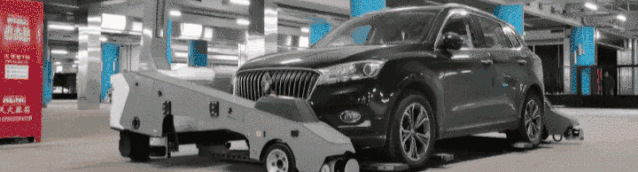
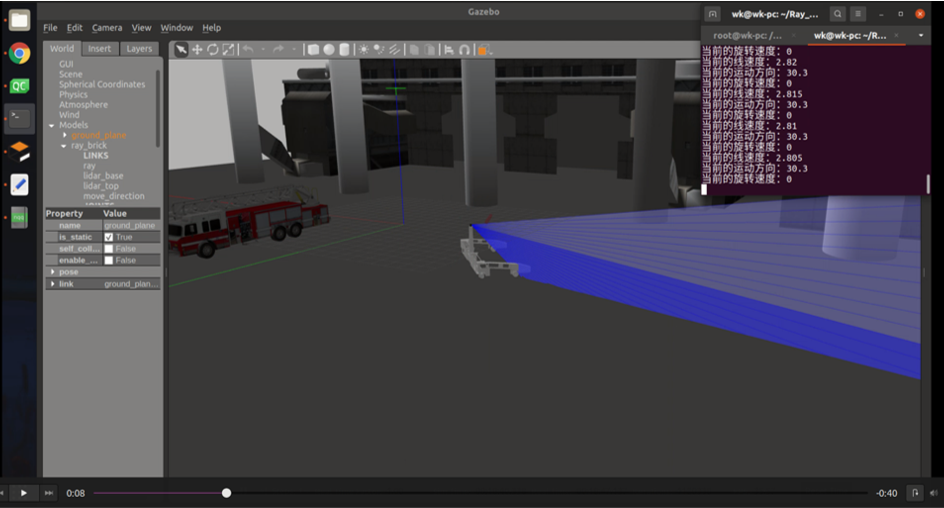
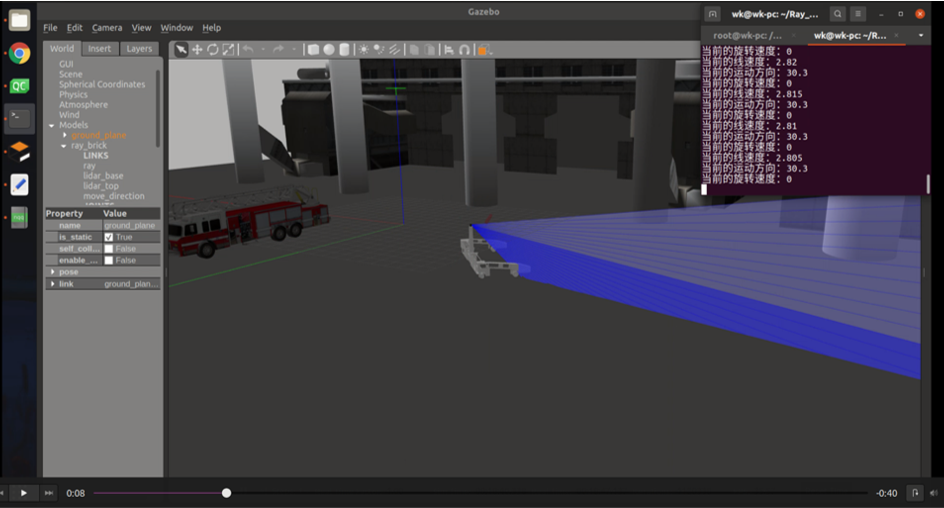
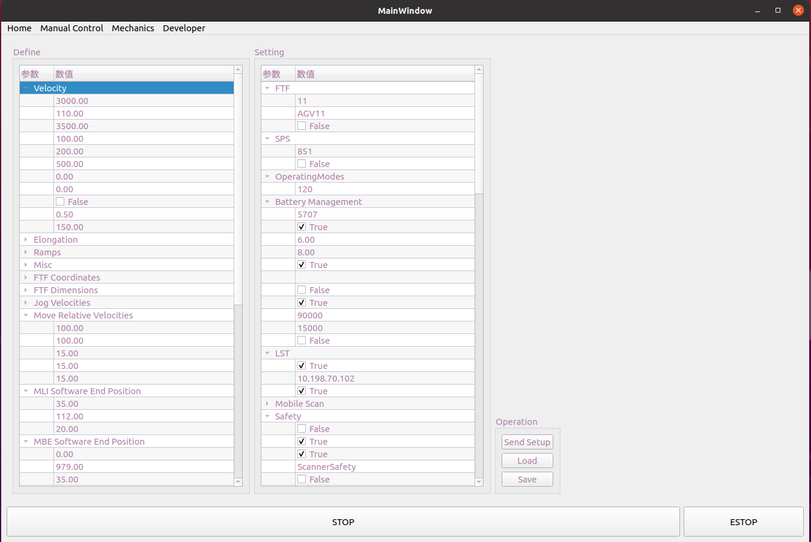
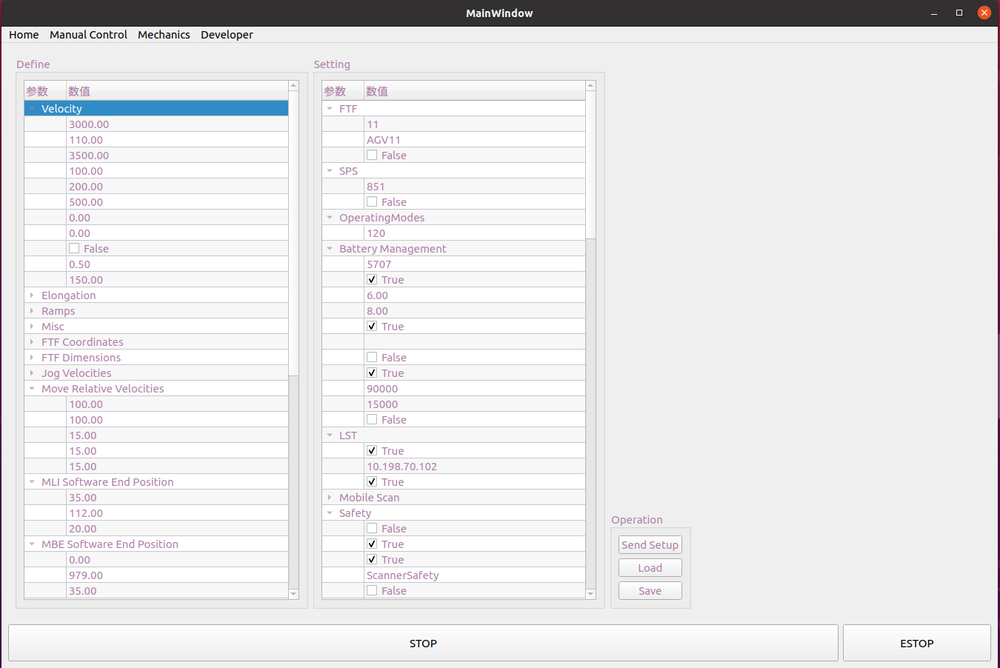
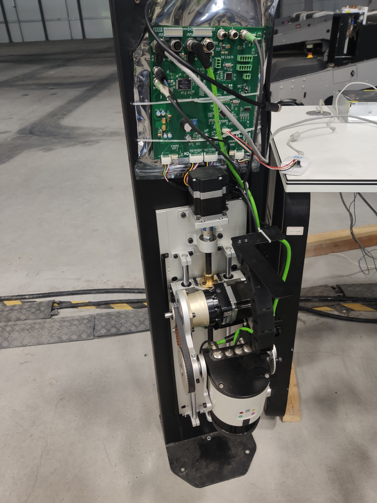
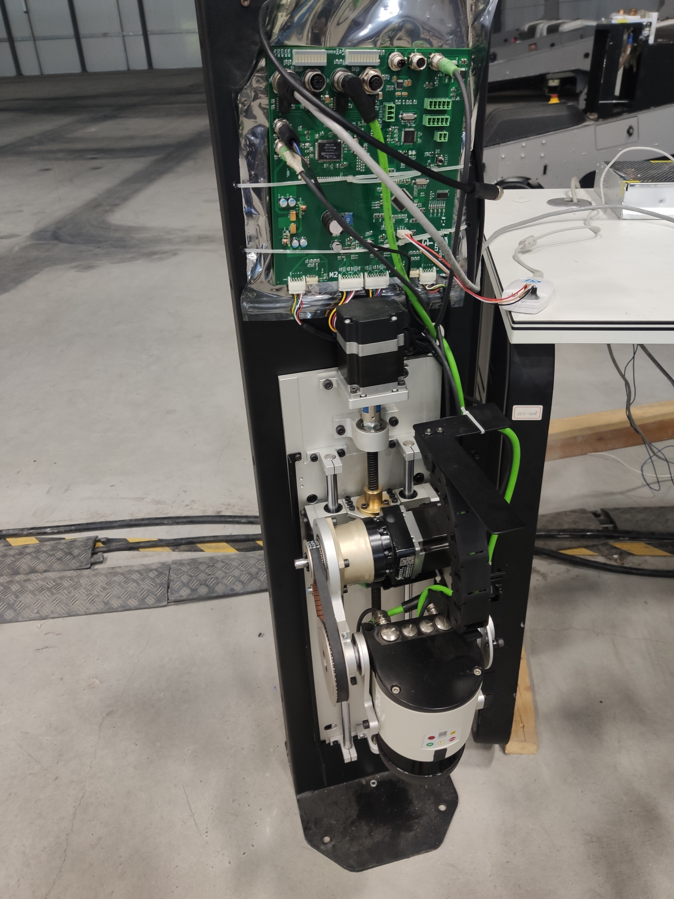

王 淞
1 工作经历
- 嵌入式工程师, 珠海丽亭智能科技有限公司, 2021.08-现在
- 嵌入式助理工程师, 珠海丽亭智能科技有限公司, 2020.08-2021.07
- 嵌入式工程师实习生, 珠海丽亭智能科技有限公司, 2020.05-2020.07
2 教育经历
- 工学学士, 本科, 测控技术与仪器, 北京师范大学珠海分校, 2016.09-2020.07
3 研究兴趣
Robotics, Multi-robot systems, SLAM, Computer vision
4 技能
- 编程语言:
- C++, C, Python, C#, etc.
- 编程技能:
- Qt, Boost, OpenCV
- Design Patterns, Concurrency
- WebSocket, Protobuf, FATFs, LwIP, CanFestival/CANOpen, etc.
- 机器人学相关技能:
- ROS, Gazebo, RVIZ
- Gmapping, AMCL, EKF, A*, D*
- Eigen, Sophus, Ceres, etc.
- 机器学习/深度学习:
- Pytorch, Numpy, Pandas, Matplotlib, etc.
- 嵌入式技能:
- STM32Fx (Arm-M), 80C51, FPGA, S3C2440 (Arm-A)
- Raspberry Pi, Arduino, etc.
- 总线技能:
- TCP/IP, CAN, PCIe, SPI, USART, I2C, etc.
- 操作系统:
- Ubuntu (Driver), ROS, FreeRTOS, CODESYS, etc.
- CAD
- AutoCAD, SolidWorks, etc.
- EDA
- KiCad, PADS, Altium Designer
- 杂项
- SQL, Git, Shell, CMake, Vim, Latex, etc.
5 外语
- 英语: TOEIC: 755
- 英语: CET4
- 日语: 日本語能力試験 (JLPT) : N2
6 资格证书
- 助理工程师 广东省职称证书 , 07. 2022
- 内部审核员资格证书 (ISO9001:2015 质量) , 09. 2019
- 全国电子行业人才证书 (单片机设计与开发·高级) , 04. 2018
- 全国计算机等级考试 (C语言) , 03. 2017
7 期刊论文 (Chinese)
- [1]王淞,庄纬豪 (Song Wang, Weihao Zhuang). 基于手势识别控制的机械手的设计与实现 (Manipulator
and Multi-axis Memory Manipulator Based on Gesture Recognition Control)[J]. 工业控制计算机 (Industrial Control Computer),2018,31(02):50-51.
8 专利 (Chinese)
- [1]赵本和,王淞 (Benhe Zhao, Song Wang). 一种屏幕激光加工定位方法及装置 (A Location Method and
Device for Screen Laser Machining)[P]. 广东省 (Guangdong)：CN109759712B,2020-12-08. - [2]曾宪梓,王淞,左景武 (Xianzi Zeng, Song Wang, Jingwu Zuo). 交互型骨灰存放容器 (Interactive Pet Ashes
Storage Container)[P]. 广东省 (Guangdong)：CN210044388U,2020-02-11. - [3]曾宪梓,王淞,左景武 (Xianzi Zeng, Song Wang, Jingwu Zuo). 宠物骨灰容器 (Pet Ashes Storage Container)[P]. 广东省 (Guangdong)：CN305601012S,2020-02-11.
- [4]王淞 (Song Wang). 机械手及基于成像传感器控制的多轴记忆机械手 (Manipulator and Multi-axis Memory Manipulator Based on Gesture Recognition Control)[P]. 河南 (Henan)：CN207841355U,2018-09-11.
Papers and patents verification website.
项目经历
1 珠海丽亭智能科技有限公司 (2020-present)
1.1 Company Profile (公司简介)
是全球领先的汽车智能搬运机器人系统解决方案提供商,致力于为客户打造机器人停车解决方案与机器人整车管理解决方案,开启智能机器人停车、智能整车管理新时代。
旗下RAY停车机器人系统开创应用于全球首个商用机器人停车场,代表项目有北京大兴国际机场丽亭机器人停车场与奥迪全球总部等。产品技术拥有多年大型项目运营经验,可实现资源效率、用户体验及商业价值的全方位升级。

1.2 Introduction to robot (机器人简介)
1.3 我的工作
全程参与丽亭智能停车机器人的研发，自研停车机器人控制器的开发。熟悉丽亭机器人的系统架构、通讯协议、机体总线等。
丽亭停车机器人由调度系统, 机器人系统, 任务管理系统等构成。能够实现多机器人协作, 自动取车、搬运、充电等功能。
机器人控制器是对标NDC等通用型控制器,软硬件采用自主研发。实现机器人包括定位, 导航, 运动控制等功能。
我的工作包括:
- 反光板定位算法
- 负责 机器人 反光柱定位算法的开发，包括反光板建图，反光板定位等。
- 机器人仿真
- 使用Gazebo作为仿真工具, 对停车机器人进行建模, 进行算法, 运动控制, 调度闭环的验证。
- 机器人控制界面
- 使用Qt开发机器人的控制器界面。包括机器人参数配置, 机器人状态可视化, 地图显示, 雷达数据可视化等功能。
- 机器人系统驱动 (Linux驱动)
- 用于机器人系统与外设进行交互。
- 机体总线
- 包括 CANOpen, TCP/IP, PCIe等.
- 其他嵌入式开发工作
- 电路设计, PCB设计, 嵌入式程序设计
1.4 项目展示
1 反光板SLAM
定位，建图是移动型机器人需要考虑的核心问题之一。根据停车机器人的使用场景，对常见的定位方法进行分析对比。最终选择使用反光柱作为标记点进行定位，以满足停车场，货运码头等空旷场景的建图，定位需求。
机器人通过激光雷达扫描周围反光柱，建立反光柱地图。当地图建立完毕后，机器人可以根据保存的地图，比对当前的反光柱，进行快速定位。
 

2. 机器人仿真系统
为了加快定位, 运动控制等相关算法的开发与调试, 减少真实机器人调试存在的安全隐患。使用gazebo搭建机器人仿真环境, 用于定位, 运动控制等算法测试, 系统联调。
视频1 展示了使用机器人控制界面对仿真机器人进行控制, rviz用于机器人位姿及激光雷达的可视化。
视频2 展示了使用机器人控制界面对仿真机器人进行控制，调度系统服务器的信息是同步的，同时调度系统可以远程控制仿真机器人。
3. 机器人控制器
这里我们自研了一款机器人控制器，用于对机器人的控制。


机器人控制器由我和一位硬件工程师联合开发，硬件工程师负责控制器硬件开发，我负责嵌入式软件开发。
我的工作包括:
- 控制器系统的移植, 包括 Ubuntu, CODESYS, ROS
- 控制器总线驱动开发, 包括CANOpen, PCIe
- 控制器使用者界面，用于机器人的控制，地图显示，参数配置与状态显示等。
 

4. 扫描柱控制器
扫描柱控制器用于交接站的扫描柱及机器人前端雷达控制。其主要功能为激光雷达机构的运动控制，及传感器数据的传输。
当汽车停靠在交接站，扫描柱会对车体进行扫描，获得车体的三维信息。此外，机器人在插取车辆前，需要对车体进行扫描定位，进而进行插取工作。


扫描柱控制器由我和另一位嵌入式工程师联合开发。
我的工作包括：
- 控制器电路设计
- 控制器PCB设计
- 控制器嵌入式软件开发
- 控制器软硬件测试
 

5. 货叉测试工装
货叉测试工装是测试定制货叉机构的耐久性和鲁棒性而设计的工具。
通过设计货叉控制器对货叉进行控制, 进行长达5万次的叉取测试, 同时实时检测电机电流, 扭矩等数据并将其可视化。进而验证货叉机构, 电机, 电机驱动器的稳定性。

该工装由我和一位机械工程师来联合开发。机构部分由机械工程师同事设计。我负责嵌入式，电气部分。
我的工作包括：
- 电气设计
- 控制器设计
- 控制程序的设计
6. 通讯转接器
采购的电池与机器人的通讯方式和通讯协议不同。设计通讯转接器进行适配。
这里设计通讯转接器, 将电池的CAN协议 转成 机器人可以解析的TCP/IP。
2 北京师范大学珠海分校 (2016-2020)
2.1 项目展示
1. 智能路灯监控系统


随着日益增长的城市灯光需求，能源消耗和硬件维护成本是令人担忧的问题。为了尝试解决上述问题，该作品设计路灯控制系统，将传统路灯进行改造，使之成为智慧型路灯。
通过在传统路灯上增加一个自己设计的控制器模块，使每个路灯成为物联网系统的终端。用户可以通过网页对每盏路灯进行控制，监测路灯的实时状态，如供电电压，电流，用电量，传感器数据等。此外，在路灯控制系统中根据使用场景，设计不同的控制策略，满足光照需求的基础上节约电量。同时控制器具有自检功能，可以及时的向管理员报错与预警，方便维修。
我的工作包括:
- 控制器电路设计
- 控制器嵌入式软件设计
- 灯光控制策略的设计
2. 机器人手臂

针对传统机械手操作步骤复杂的情况，设计实现了一种基于手势控制的多轴机械手。通过 3D 打印技术完成了机械手的实体制作。通过视觉传感器 (leap motion)检测操作者手臂在空间方位上的变化，拾取腕部及指关节的运动参数，转换为舵机指令用于控制机械手的动作。添加了记忆功能使机械手操作路径得以保存，可用于流水线等需要快速重复的场合。 基于手势的控制方式操作简便，减少了动作变换的时间和操作成本，有利于生产效率的提高。
我的工作包括:
- 机构设计
- 嵌入式软件设计
- 机械手臂运动模型设计
3. 交互型宠物骨灰容器

人们通常对自己的宠物有着深厚的感情。当宠物去世后，仍然对逝者有着很强的羁绊。该作品将骨灰盒和灯具结合在一起，让宠物以另一种形式陪伴。给心灵以慰籍。
该作品的价值体现在工业设计和心理学上。通过使用者和灯光的交互，达到抚慰宠物去世时沉痛的心灵的效果。让使用者感受到，“它还在”。
在该作品上，我作为合作者，提供控制方面的实现。